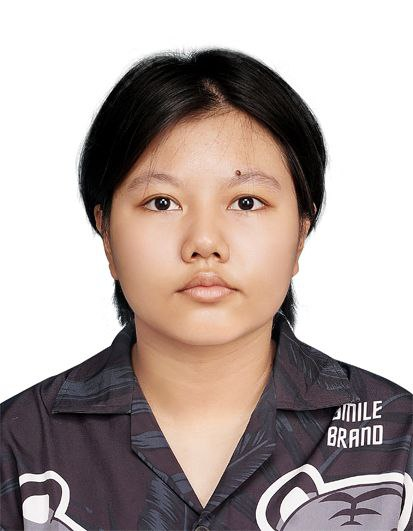

Motivated Diploma in Computer Science student at INTI International College Penang with skills in Java, SQL, Oracle, HTML, CSS, Figma, UX design, and basic networking. Experienced in academic projects and currently serving as Treasurer of the International Student Officers. Seeking an internship to apply technical skills and gain practical industry experience.

Professional Profile & Career Aspiration
I am an ambitious Computer Science student who thrives on bridging technology, user experience, and real-world problem solving. From developing structured web pages and architecting relational database ERDs to designing user-centered UI/UX prototypes on Figma, I continually seek to sharpen my technical breadth.
Alongside my academic coursework, I serve in a student leadership role as the Treasurer for the International Student Officers, where I cultivate strong organizational management, budgeting, and multicultural communication abilities.
My academic foundation & achievements
Comprehensive coursework covering Object-Oriented Programming (Java, C++), Database Design & Implementation (SQL, Oracle), Web Technologies (HTML, CSS), Computer Networking fundamentals, and Human-Computer Interaction.
Tools, languages, and technologies I work with
Hands-on development and design projects built during my studies
Developed a student-focused website designed to deliver academic productivity and study advice. Created structured multi-page navigation, high-quality image layouts, organized tables, and clean external CSS styling.
Designed a modern mobile pet care application interface in Figma. Applied key user experience (UX) principles and usability guidelines to craft intuitive, clear, and user-friendly mobile screens for pet owners.
Engineered an Entity Relationship Diagram (ERD) for a robust event registration workflow. Executed comprehensive SQL scripts and managed Oracle database operations for schemas, tables, constraints, and queries.
Extracurricular responsibility and teamwork
Distinguished faculty members from INTI International College Penang
Open for internship discussions and interview arrangements